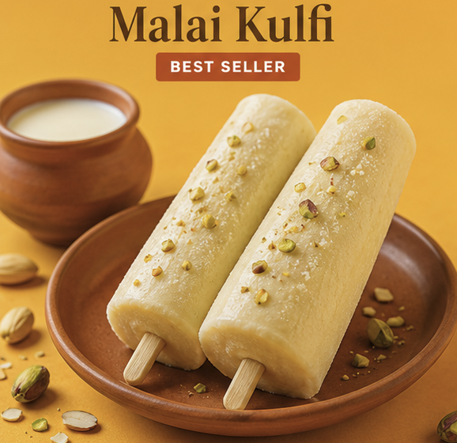

Kulfi Corner was born from a simple passion — to bring back the authentic taste of Indian kulfi that many of us grew up loving. The rich, dense, creamy kulfi made from slow-cooked full-cream milk. Not the quick-frozen kind. Not the artificial kind. The real kind.
Every kulfi at Kulfi Corner is prepared using traditional recipes. We use pure full-cream milk simmered to the right consistency before blending in authentic Indian flavours — saffron, cardamom, rose, pista, badam and much more.
We never compromise on ingredients. No artificial flavours. No shortcuts. Every kulfi is made fresh and served at its very best — because that is the Kulfi Corner promise.